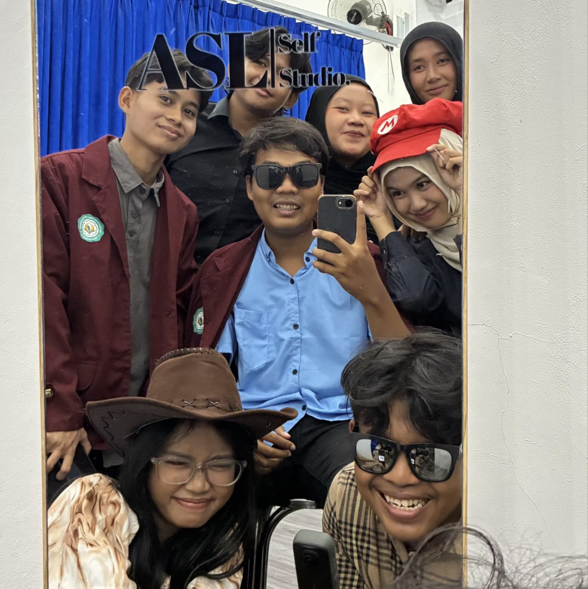

Siap untuk menjelajah dunia kreatifku?
Selamat datang di portofolio santai saya! Di sini bukan cuma berisi deretan kode yang rumit, tapi juga cerita tentang proses ngulik hal baru, pusing mikirin error, sampai kelegaan luar biasa waktu programnya jalan dengan lancar. 🙌

Saya adalah Maba Sistem Informasi yang punya ketertarikan bikin sesuatu di layar laptop! Saya suka mengubah ide-ide spontan menjadi tampilan web yang bisa diklik, dimainkan, dan dinikmati orang lain.
Motto saya: "Lebih baik mencoba dan menemukan 20 error, daripada tidak pernah mencoba sama sekali." Karena daripada takut salah, mendingan belajar dari kesalahan dan terus berkembang.
Cerita singkat perjalanan dan ketertarikan saya di dunia IT.
Mempunyai ketertarikan di dunia IT dengan mengikuti organisasi Community of Information Technology. Memiliki minat pada Divisi Programmer untuk terus mempelajari dalam coding.
Berawal dari rasa penasaran menulis tag HTML pertama, hingga akhirnya asyik bereksperimen dengan desain antarmuka (CSS).
Membangun pondasi kreativitas melalui penulisan skenario drama sekolah, perancangan copywriting media sosial, dan pembuatan konten digital yang memadukan visual dengan pesan yang kuat.
Membangun identitas digital menggunakan HTML, CSS, dan JS untuk menciptakan web yang seru dan nggak membosankan!
Program pemecah masalah pakai logika Boolean. Cocok banget buat melatih otak biar tidak tumpul saat menghadapi bug yang membandel.
Bikin format laporan dan pencatatan keuangan menggunakan Google Sheets. Memanfaatkan checkbox dan rumus dasar supaya perhitungannya lebih cepat dan terstruktur.
Punya ide proyek kolaborasi yang gokil? Atau sekadar mau diskusi soal teknologi? Jangan ragu buat menyapa saya!